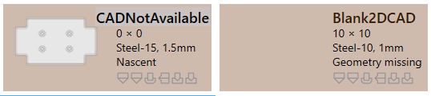
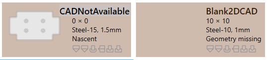

Validación de piezas
Error de CAD
Inviable (plegar y cortar)
-
JFY Plus asigna un estado de plegado inviable a la pieza si no se encuentra una solución de plegado válida durante el mecanizado automático.
-
Si la solución de plegado [08.07] tiene una advertencia que se ignorará automáticamente, se considerará para la solución de corte.
-
La pieza se pone en estado de corte inviable si no se encuentra ninguna solución de corte viable.
 === Error de material
- Material faltante: inicialmente se lee el espesor del modelo y se asigna el material, que se compara con la JFY Plus materia prima. Si no existe, se asigna un error de material faltante.
- _Material not assigned
: Si el modelo no tiene un campo de mapa para el material, se le asigna "Material no asignado".
=== Error de material
- Material faltante: inicialmente se lee el espesor del modelo y se asigna el material, que se compara con la JFY Plus materia prima. Si no existe, se asigna un error de material faltante.
- _Material not assigned
: Si el modelo no tiene un campo de mapa para el material, se le asigna "Material no asignado".
=== Error de geometría
- Open contours detected:
CAD tiene entidad abierta.
- Multiple outer contours detected:
CAD tiene múltiples bucles cerrados.
 - Incipiente: al cargar una pieza desde una hoja de cálculo csv o xlsx, los archivos CAD que faltan se crean como error de pieza Incipiente.
- Geometry missing
: CAD no tiene una geometría válida o no está disponible.

== Error CAM
=== Error de utillaje de plegado
- Incipiente: al cargar una pieza desde una hoja de cálculo csv o xlsx, los archivos CAD que faltan se crean como error de pieza Incipiente.
- Geometry missing
: CAD no tiene una geometría válida o no está disponible.

== Error CAM
=== Error de utillaje de plegado
A continuación se indican los errores de los útiles de plegado.
-
Collisions detected y Gripper error.
 - Útil Overload error y agujero cerca de la línea de plegado.
- Útil Overload error y agujero cerca de la línea de plegado.
 - Needs review
y el punzón/matriz tienen un recorrido corto.
- Needs review
y el punzón/matriz tienen un recorrido corto.
 - Tool missing
, Poor backguage
, Pieza demasiado grande para la máquina.
- Tool missing
, Poor backguage
, Pieza demasiado grande para la máquina.

A continuación se indican los errores de los útiles de corte.
-
Condición de corte faltante no asignada a la materia prima.
 - Error de pepita: para los útiles de punzonado, el bucle interno se mecaniza sin uniones.
- Untooled or partially tooled contours
: Faltan segmentos punzonados.
- Error de pepita: para los útiles de punzonado, el bucle interno se mecaniza sin uniones.
- Untooled or partially tooled contours
: Faltan segmentos punzonados.